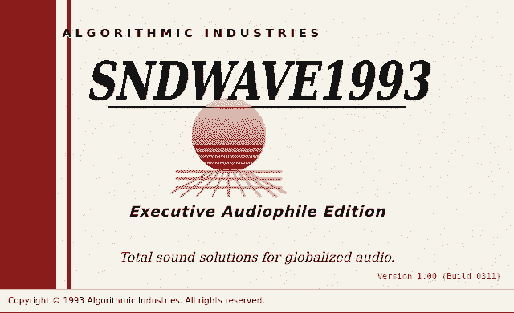
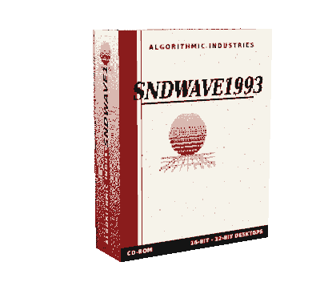
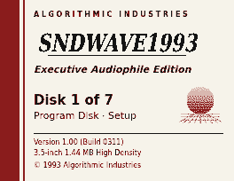
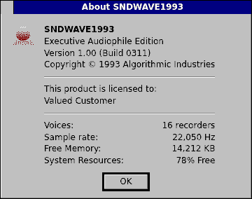

SNDWAVE1993 · Executive Audiophile Edition
Sixteen Sound Recorders, one instrument
Total sound solutions for globalized audio.
An instrument for your DAW made of sixteen real Windows 3.11 Sound Recorders. It runs Windows for Workgroups 3.11 inside the plugin, opens sixteen copies of Sound Recorder, and plays your notes on them. Every sound is built with Sound Recorder's own menu commands; the plugin never makes a sound of its own.
Computing at Your Pace: SNDWAVE1993
Features
A sound is a DNA, one line of text: layers of Sound Recorder commands, then settings. chimesE+;R900 is CHIMES.WAV with Add Echo and Increase Volume, and a 900 ms release. Type one in, pick a preset, or press the Effects buttons. The pictures are from the tour above.

Sixteen Sound Recorders
Each note presses Play on a real Sound Recorder in Windows for Workgroups 3.11. Up to 8 layers per sound, four automatable macros, drawn volume and pan envelopes, and five octaves of Windows push-button keys with Bend and Mod.

26 sound-pack discs
1,437 presets on 26 discs, on drive P:. In the Library tab, pick a disc, pick a preset and press Load preset. A preset that needs a disc inserts it by itself.

The Song tab
New in 1.4. Import a MIDI file, give each track a preset and press Render. Every track plays in its own Windows, on its own sixteen Sound Recorders; the mix gets echo, reverb and a loudness target. Export the WAV.

Drum kits
Kits put a different sound on each key, with a calculator for laying out the pads. Kit Manager 98 has 39 of them.

The step sequencer
A step sequencer drawn like Minesweeper, following your DAW. In 1.5 it becomes the Steps tab: numbers 1 to 8 are scale degrees, a mine is a tie, a flag an accent, arrows shift an octave, kits get a row per pad, the face runs the pattern on its own, and the pattern is saved with the sound.

Recording
It records from a stereo sidechain into a real Sound Recorder. Takes go to My Recordings, play on one strip or all sixteen, and travel inside your project.
Windows Help
SNDWAVE.HLP, for Windows 3.11's own WINHELP.EXE: contents, Search, glossary popups and a full DNA reference, compiled by a small WinHelp compiler written for it.

Coming in 1.5
CITYPOP1993.EXE plays the album CITYPOP1993 inside the plugin, every part on its own Sound Recorders. Gene Pool deals sounds as playing cards to keep and breed. And Windows' Clock reads 1993.
Sound packs
SNDWAVE1993 ships with a library of 1,437 presets on 26 sound-pack discs, each from an independent publisher: a Reston multimedia house, a Bielefeld studio-equipment maker, a Hsinchu electronics firm, a London garage label turned limited company. Every disc has its box, its manual and its Windows help file, and every disc is in the download, on drive P:. Browse them here, play any pack's presets and songs, or open the full Sound Pack Explorer.
 ListenCITYPOP1993An album performed on SNDWAVE1993: a theme and eleven variations, about 41 minutes, every note played by its Sound Recorders. Its sounds are on disc 26, Rainy Loft Collection.
ListenCITYPOP1993An album performed on SNDWAVE1993: a theme and eleven variations, about 41 minutes, every note played by its Sound Recorders. Its sounds are on disc 26, Rainy Loft Collection.
How it works: what is original, what is ours
The sound of a preset is made by Windows' own programs from Windows' own files. What we added plays those sounds as notes and shapes them.
Original: the program and its commands
Every DNA step is one of Sound Recorder's own menu commands, run by the real Sound Recorder (SOUNDREC.EXE) in its own process, on its own buffer:
- Increase / Decrease Volume, Increase / Decrease Speed
- Add Echo (Sound Recorder's real echo) and Reverse
- Delete Before / After Current Position
- Copy, Paste Insert, Paste Mix
- Insert File and Mix with File
Our program in Windows only picks the menu items and moves the position slider; it never edits the samples.
Original: the sounds
The Windows sounds are files from the Windows installs themselves:
- CHIMES, DING, RINGIN and RINGOUT from Windows for Workgroups 3.11, plus CHORD and TADA from Windows 3.1 (3.11's disks had dropped them).
- Windows XP's 35 sounds, converted to PCM that Sound Recorder 3.1 opens, in C:\XPSOUNDS. One name means one file:
dingis the 3.x recording,ding-xpXP's.
The library disc is added material: CC0 and public-domain recordings, each credited on the disc. They are converted to 22050 Hz 16-bit mono so Sound Recorder 3.1 can open them.
Ours: playing notes
- The voice allocator: which recorder plays which note
- Note pitch, transpose, harmony and unison voices, velocity, pitch bend
- Layer levels, pan and start offsets, the ADSR and drawn envelopes
- The four macros and the mod wheel
- The assembled screen: our program in Windows strips the real recorders of their menus and title bars, lines them up, and adds panels and a keyboard built from Windows' own controls
How a note is played
Our program presses the recorder's own Rewind and Play. Sound Recorder plays its own buffer through the normal Windows sound calls. We added a 32-voice sound card to the emulator, and a Windows 3.11 driver for it; the card sets each voice's rate (the pitch, with 4-point Hermite interpolation), volume, pan and envelope.
The emulator is DOSBox Pure, with our sound card added. The plugin never makes a sound of its own. It delays the emulated machine's output by a fixed, reported latency, resamples it to your session's rate, and applies Output Gain.
Try it online

The instrument runs in your browser: the plugin's own engine, compiled for the web, with the same Windows for Workgroups 3.11 and the same sixteen Sound Recorders. It resumes from the moment the synth finished assembling, so it is ready as soon as it has loaded, about 5 MB. Play it with the on-screen keys, the computer keyboard or Web MIDI.
Best on a desktop or laptop computer: it needs a mouse, a keyboard and a fast processor.
Download
SNDWAVE1993 is a sixteen-voice synthesizer built from real Sound Recorders. The download is complete: the plugin, Windows 3.11 and its Sound Recorders, the library disc, all 26 sound-pack discs (on drive P:) and the batch renderer, with nothing else to install or find. The current release is 1.4.0: VST3 and CLAP for Windows and macOS, and Audio Unit for macOS.
Releases 1.3.0 to 1.4.0 were published as SNDWAVE2000, and releases up to 1.2.1 as BASILISK 16; from 1.5 the plugin is SNDWAVE1993. Projects, presets and .b16 files from any of them open unchanged: the plugin keeps the same plugin IDs and state format.

1.4.0, published as SNDWAVE2000. SHA256SUMS and the emulator source as built (DOSBox Pure with the BSYN card, GPLv2+) are on the release page. Source: packages/basilisk-synth-311. The previous release, 1.2.1 as BASILISK 16, is still available.
Install
- Windows
- 1.4.0 installs under its published name, SNDWAVE2000. Unzip. Copy the SNDWAVE2000.vst3 folder to
C:\Program Files\Common Files\VST3and, for CLAP hosts, SNDWAVE2000.clap toC:\Program Files\Common Files\CLAP(it uses the installed VST3's machine). Rescan plugins in your DAW. It is not code-signed; DAWs load it like any other unsigned plugin. The batch renderer is inbatch\render311.exe. - macOS
- Unzip. Copy SNDWAVE2000.vst3 to
~/Library/Audio/Plug-Ins/VST3, SNDWAVE2000.component to~/Library/Audio/Plug-Ins/Componentsand SNDWAVE2000.clap to~/Library/Audio/Plug-Ins/CLAP. It is ad-hoc signed but not notarized, so run this once in Terminal, then restart the DAW:xattr -dr com.apple.quarantine ~/Library/Audio/Plug-Ins/*/SNDWAVE2000.*
- From 1.2.1
- Remove Basilisk16.vst3 (and on macOS Basilisk16.component) first: SNDWAVE2000 uses the same plugin IDs, so your BASILISK 16 projects open in it.
Good to know
New in 1.4.0: the Song tab, for multi-track songs, each track in its own Windows 3.11, mixed with echo, reverb, loudness and a true-peak ceiling (Import MIDI, Save and Open .sng, Export WAV, and render311 --song); Notes… for notes on any tab; measured tuning for 132 presets; a 26th disc, Rainy Loft Collection (80 presets); offline renders up to twice as fast; and one machine for every computer, so Linux, Windows and macOS (Apple silicon and Intel) render the same bytes.
New in 1.3: the title screen, a Program Manager group, the About box and a Windows help file (SNDWAVE.HLP); Voices, Playback, Scales, Rec, Mines and Library tabs; DNA v3 (voice modes and stacks, humanize, tape wow and flutter, key zones, grains, kits, the mine-grid sequencer); key and scale parameters with Scala import; a Recorder for your own takes from a stereo sidechain, saved with the project; a step sequencer drawn like Minesweeper that follows your DAW; the sound-pack discs on drive P:; Save and Load of .b16 states. 1.3.1 fixed the Library tab and the step-sequencer kits. Full notes are on the 1.4.0 and 1.3.0 release pages.
No account and no API key. The 76 programs are in your DAW's preset list and in Windows' Preset drop-down, and you can also type a DNA straight into Windows. A new sound is built while the old one keeps playing: Windows rebuilds one recorder at a time and plays your notes in between, so a preset change never interrupts you. Offline renders wait for the build and come out bit-identical every time, including after reloading the project; live playback never waits (it is silent for the few seconds Windows takes to assemble). It reports a fixed latency of 60 ms, which DAWs compensate for on playback; you hear it when you play live. Each instance is an emulated PC that rests when it has nothing to do: about 13% of one core idle and 35% while playing, on the PC it was built on. Sixteen voices per instance; a seventeenth note steals the oldest.
Credits and licences
Windows for Workgroups 3.11, Windows 3.1 and Windows XP, their sounds, and Sound Recorder are © 1985–2001 Microsoft Corporation. The Windows images came from Windows for Workgroups 3.11 and Windows XP Professional SP3 as preserved by the Internet Archive.
The library disc's sounds are public domain and CC0; each one's source and licence is listed on the disc (\LIBRARY.TSV) and in packages/basilisk-synth/library.
The emulator is DOSBox Pure (GPLv2 or later), with one addition: BSYN, an emulated 32-voice sound card, because Windows 3.11's Sound Blaster driver can only play one sound at a time. The plugin is built with DPF.
The tour video: every Windows shot is the plugin itself, recorded in a test host; the desk is a Blender scene; narration by Kokoro-82M; music from the SNDWAVE1993 pack songs (Atrium Level B2, Aquarium (Level 3), Fax Machine Fanfare) and CITYPOP1993 tracks 1 and 12.
The site and the box are set in DejaVu Serif and DejaVu Sans (free licence).

